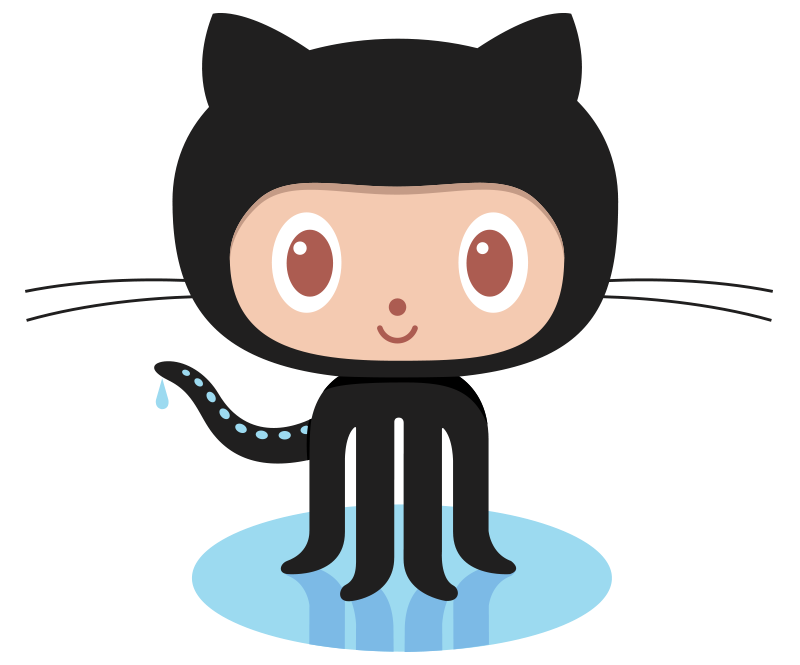
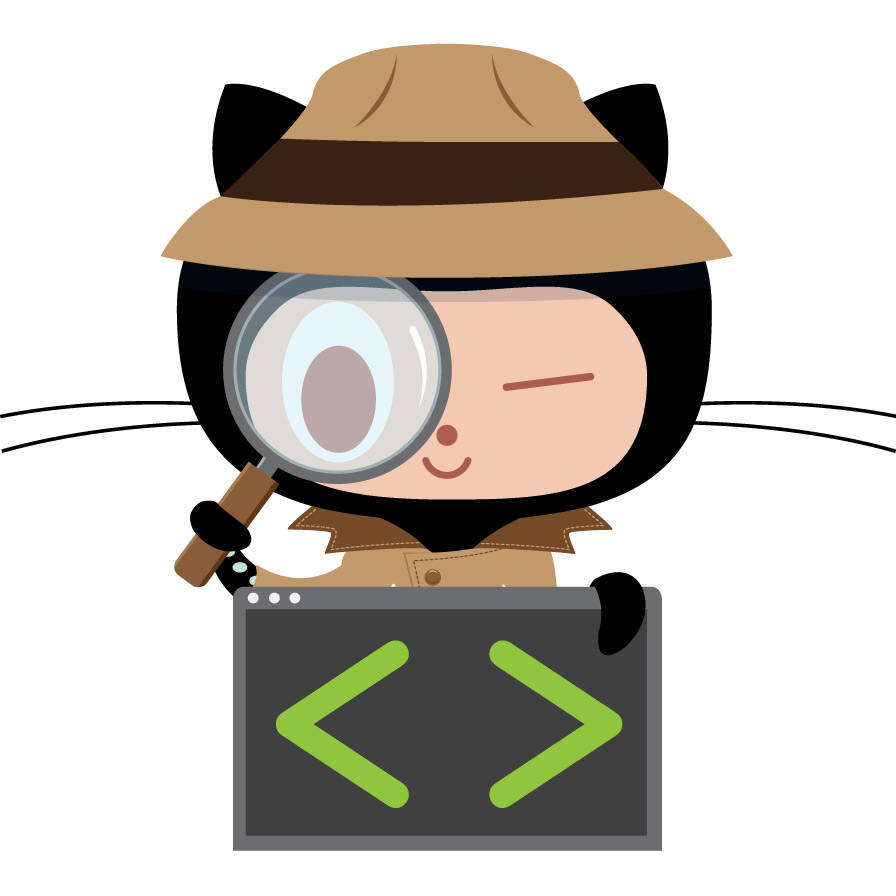
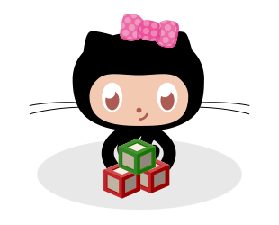
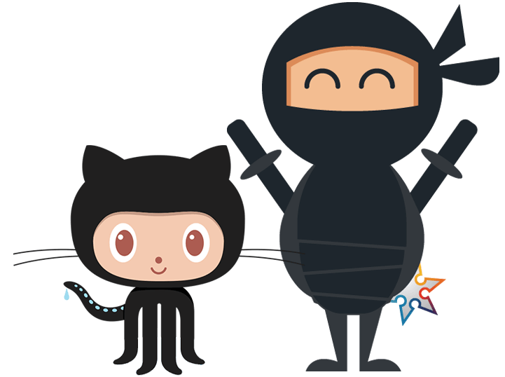

In this activity, you will practice your Git knowledge. You will follow a set of steps and will take screenshots of your work as a proof of completing the tasks. You will include all your screenshots in a word file and submit one file.
Submission format - You will work individually on this task, however, for one of the steps (reviewing your pull request) you will need to add a friend to your repository and ask them to do this step for you.
Estimated time: 1 hour



